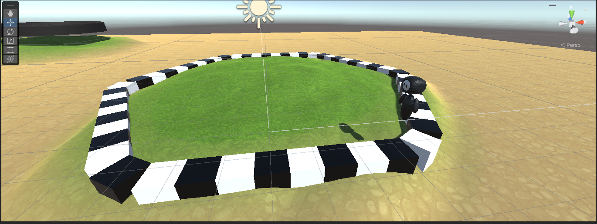

Lore
Ark-Pocalips es juego que nos llevan a una isla en medio del oceano pacifico, dondo sen cuentra un ecosistema que se creia extintas
Con el unico problema es que la isla esta en costantes cambios, que llevaran a las criaturas a adptarse a los estos fenomenos como tambien tener que sobrevivir a los demas criaturas que los querran comer
Como se juega
Primero tendras que elegir una de los 4 tipos de dinosaurios que existen:
Tipos de dinosaurios
- Volador: esta rama de dinos tienden a volar y atrapar con sus hagas a los dinos enemigos para darles desbetajas como esquivar peligros
- Carnivor: estos dinos son capases de morder a los dinos enemigos cuasandoles daño
- Herbibor: son grandes y fuertes, pueden desde empujar a los demas dinos y curarse comiendo plantas
- Acuatico: gracias a un remolino que los lleva por la isla son capases de moverse y si lo requiere pueden esconderse debajo del agua
La isla
En la isla encontraran muchos peligros, recursos y lo necesario para evolucionar, ya que la isla esta en constante cambio sera vital que los dinosaurios sean capaces de adaptarse a su entorno
Casillas
Hambran distintas casillas en la isla las cuales otorgaran distintas ventajas y desventajas
- Casilla de inicio: aqui empezaran los dinos
- Casilla de herramienta: aqui los dinos encotrar herramientas que lo ayudaran con su trabesia, desde una roca en llamas o una muslo de carne
- Casilla de dinohuevo: en esta se encontrar un huevo el cual les daran una vida extra o la posibilidad de evolucionar
- Casilla de evento canonico: esta casilla probocara que en alguna parte de la isla sufra alguna castastrofe que cambiara su ambiente de manera drastica
Imagenes del prototipo del juego
Aqui tenemos el primer prototipo funcional, el cual solo puede hacer que se mueva el personaje hacia adelante en bse a unos dados
Comentario
En futuras verciones de la pagina agregaremos mas referencias y datos curiosos de los arkeanos, primero queremos desarrollar un juego base para hacer una verdadera experiencia de juego para los arkenos y a su comundad tan bella
Redes sociales
Link del canal de youtube de NexxuzWorld

Discord del proyecto: